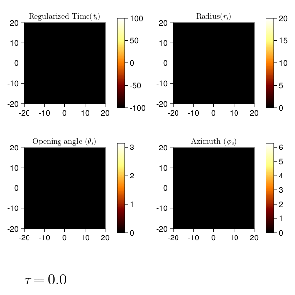

Raytracing
Light rays in this module can be parameterized in terms of either the cones ($\theta_s$), or the minotime ($\Delta\tau$).
Raytracing conical surfaces ($\theta_s$)
Surfaces of constant $\theta$ define spin axis centered cones whose apex lie at the origin of the coordinate system.

n=0 and n=1 images of emission coordinates originating from conical surfaces.
Raytracing with rays parameterized by Mino time ($\Delta\tau$)

Coordinate evolution with Mino time.